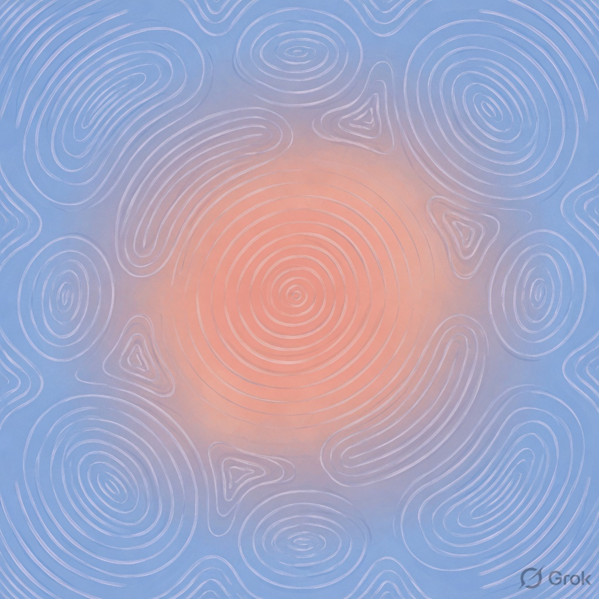

AI made everyone faster.
Generation is cheap. Judgment is rare. Critelo reviews composition, hierarchy, type, and brand fit — not vibes.
Critelo makes everyone better.

Coral
Paper
Signal
Ink
Built exclusively for creatives. Critelo reviews logos, sites, identity systems, and posters with structured feedback grounded in design principles — tailored to your goals.
Go beyond “looks good.” Get notes on hierarchy, contrast, consistency, accessibility, and brand impact.
Positioning
Critelo is a fictional AI for designers who want structured feedback — not generic praise. Upload a logo, website, brand system, or poster; get principles-backed notes that make the work better.
Name the problem. Point to the principle. Suggest a next move.
Hierarchy, type, color, spacing, brand fit — never “make it pop.”
Blue for clarity, coral for energy — serious without being cold.
Typography
Critelo
Plus Jakarta Sans 800 · tracking −0.03em · logo & headlines
Judgment is the craft.
Plus Jakarta Sans 400–600 · UI, cards, long copy
Usage